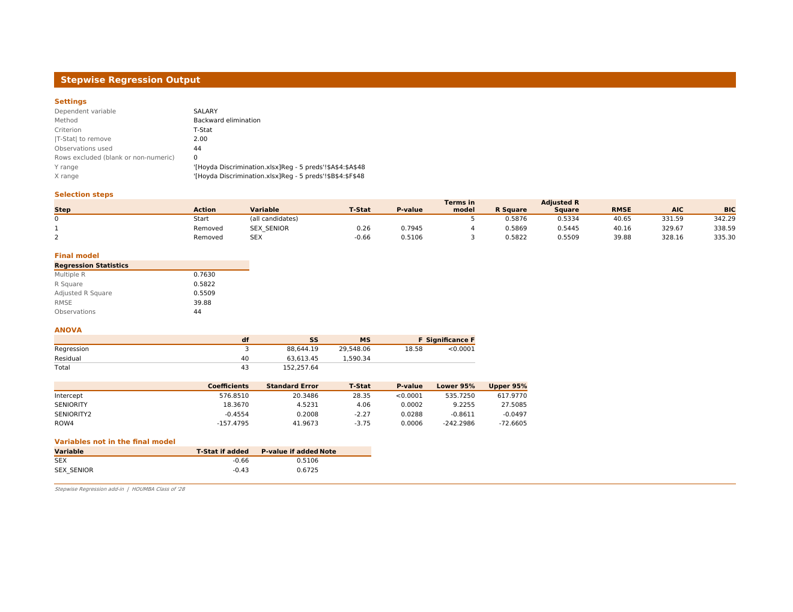

An Excel add-in that runs forward selection, backward elimination and stepwise regression, then writes a report in the same layout as Excel's Data Analysis > Regression tool. It works in Excel for Windows, Mac and the web, and needs no macros.
Install from the Office Add-ins store
- In Excel, go to Home > Add-ins (or Insert > Get Add-ins).
- Search for Stepwise Regression and click Add.
- A Stepwise Regression button appears on the Home tab.
Install from the manifest file
Use this before the store listing is live, or if the store is unavailable.
Excel for the web
- Open a workbook at office.com.
- Go to Home > Add-ins > More Add-ins, open the My Add-ins tab, then Upload My Add-in.
- Choose the downloaded
manifest.xmland click Upload.
Excel for Mac
- Quit Excel.
- In Finder, press Cmd+Shift+G and go to
~/Library/Containers/com.microsoft.Excel/Data/Documents/wef(create theweffolder if it is missing). - Copy
manifest.xmlinto that folder and reopen Excel. The add-in is under Home > Add-ins > My Add-ins.
Excel for Windows
Go to Home > Add-ins > More Add-ins > My Add-ins. If Upload My Add-in is shown, use it as above. If not, use Excel for the web or install from the store.
Use it
- Click Stepwise Regression on the Home tab.
- Select the Y column and click Use selection, then do the same for the X columns.
- Choose the method and criterion and click Run regression. The report opens on a new sheet.
